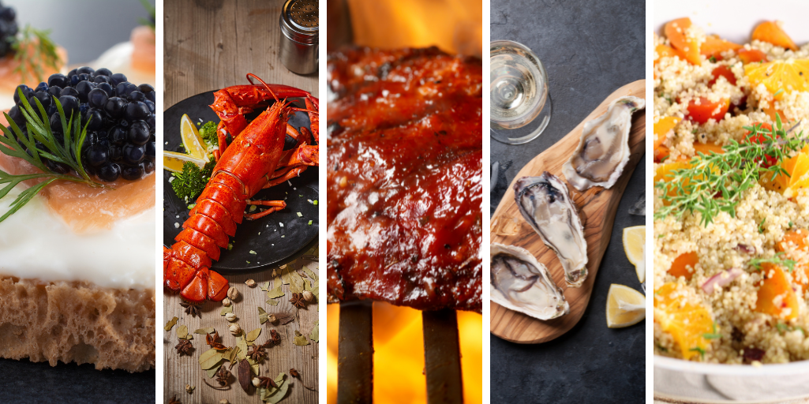

Welcome to Chef KD's Tantalizing Kitchen
Pick one of our exquisite options to impress your loved ones:
Spaghetti Semplici
- A dish of rustic simplicity, highlighting the beauty of pasta in
its purest form, without the distraction of heavy sauces or
overpowering flavors.
Nut Butter sur le Toast
A study in balance and proportion, showcasing the earthy purity
of peanut butter and the understated elegance of
a classic bread pairing.
Le Cereal avec de Milk
- An exquisite morning ritual featuring the symphony of
crispy grains and velvety milk, evocative of childhood
memories and culinary nostalgia.
Galushka Iubita
- A soulful and satisfying dish that speaks to the heart,
these tender and pillowy dumplings transport the palate to
the bosom of traditional Romanian cuisine.